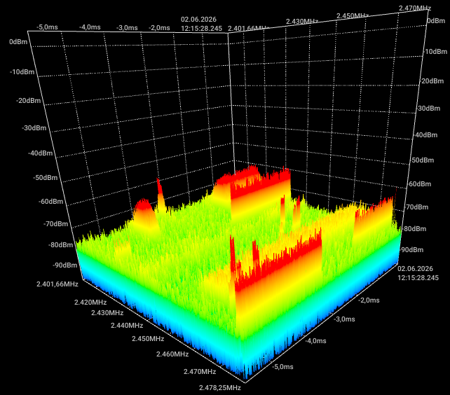
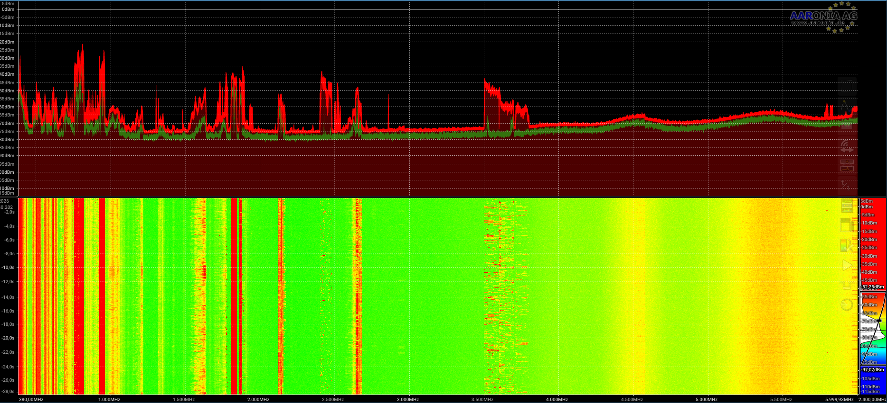
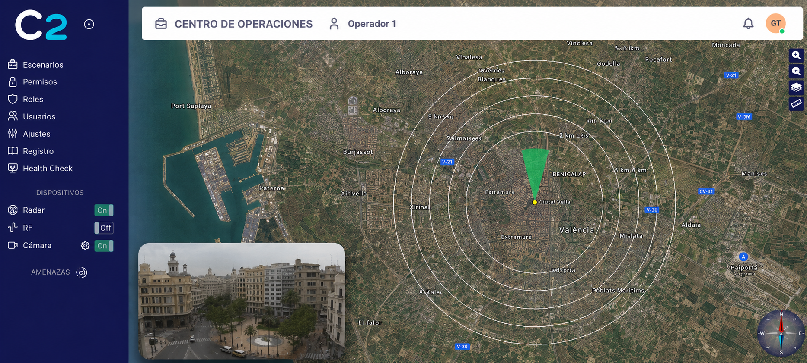

Radiofrecuencia · Monitorización espectral · Detección sectorial
Este proyecto se centra en el desarrollo de un sistema antidron basado en la detección de señales de radiofrecuencia. El objetivo principal es analizar el entorno radioeléctrico para identificar actividad compatible con la presencia de drones, prestando especial atención a las bandas de comunicación utilizadas habitualmente para control, telemetría y transmisión de datos.
A diferencia de otros enfoques basados en imagen o radar, este sistema trabaja directamente sobre la señal RF capturada, permitiendo detectar actividad incluso cuando el dron no se encuentra en línea visual directa. Para ello, se estudian características como la ocupación espectral, la evolución temporal de la señal, la aparición de transmisiones intermitentes, la distribución de energía en frecuencia y la actividad detectada por sectores.

La arquitectura hardware se plantea de forma modular para facilitar la captura, el análisis y el envío de información. El sistema puede dividirse en varios bloques: una etapa de antenas para la recepción de señales, una etapa RF encargada de acondicionar y digitalizar la señal, una unidad de procesamiento local y un módulo de comunicaciones para reportar los eventos detectados.
En el trabajo se han considerado diferentes elementos de arquitectura como antenas sectoriales, receptores de radio definidos por software, unidades de procesamiento embebido, sistemas de alimentación, comunicaciones internas y una interfaz de visualización. Esta separación permite adaptar el sistema a distintos escenarios, ampliar la cobertura mediante nuevos sectores y mejorar la capacidad de monitorización sin modificar toda la solución.
| Bloque | Función dentro del sistema | Resultado aportado |
|---|---|---|
| Antenas sectoriales | Reciben señales procedentes de distintas zonas del entorno | Permiten asociar la detección a un sector concreto |
| Etapa RF | Captura y acondiciona las señales recibidas | Genera muestras útiles para su análisis espectral |
| Procesamiento local | Analiza la actividad radioeléctrica capturada | Extrae eventos, niveles de actividad y posibles alertas |
| Comunicaciones | Envía los resultados hacia una interfaz externa | Permite visualizar las detecciones en tiempo real |
| Interfaz de visualización | Presenta la información al operador | Muestra sectores, alertas, histórico y estado del sistema |
Tabla 1. Bloques principales de la arquitectura hardware y funcional del sistema.
El núcleo del trabajo se encuentra en la detección RF. El sistema observa el espectro en busca de patrones de actividad que puedan estar relacionados con comunicaciones de drones. Para ello, se representa la señal tanto en frecuencia como en tiempo, lo que permite estudiar cuándo aparece una transmisión, cuánto ancho de banda ocupa, en qué zona del espectro se concentra y cómo evoluciona durante la captura.
El análisis se apoya en representaciones visuales como espectros de potencia, espectrogramas y gráficas temporales de energía. Estas herramientas permiten comparar diferentes capturas, localizar actividad relevante y diferenciar señales persistentes, señales intermitentes o transmisiones que aparecen en distintos rangos de frecuencia. Sin entrar en algoritmos concretos, el sistema transforma estas observaciones en eventos de detección comprensibles para el operador.

Para mejorar la interpretación de las detecciones, el sistema se organiza por sectores. Cada sector representa una zona de vigilancia asociada a una antena o a una dirección de observación. De esta forma, cuando se detecta actividad RF sospechosa, no solo se registra la presencia de la señal, sino también el sector desde el que se ha recibido con mayor intensidad.
Esta aproximación resulta especialmente útil en escenarios donde es necesario conocer la dirección aproximada de una posible amenaza. La información sectorial permite priorizar zonas, comparar niveles de actividad entre sectores y construir una visión más clara del entorno radioeléctrico.
| Información RF | Descripción | Utilidad |
|---|---|---|
| Sector activo | Zona desde la que se recibe actividad relevante | Ubicación aproximada de la amenaza |
| Nivel de señal | Intensidad relativa de la señal capturada | Comparación entre sectores y priorización |
| Ocupación espectral | Rango de frecuencias donde aparece actividad | Caracterización básica de la transmisión |
| Actividad temporal | Instantes en los que la señal aparece o desaparece | Seguimiento de la evolución de la detección |
| Estado de alerta | Nivel general asignado al evento detectado | Apoyo a la toma de decisiones |
Tabla 2. Información generada a partir de la detección RF sectorial.
Una vez generada la detección, el sistema reporta la información esencial para que pueda ser representada en una interfaz de supervisión o en una plataforma C2. Esta parte no constituye el núcleo del trabajo, pero permite que los resultados del análisis RF sean comprensibles y útiles para un operador.
La visualización puede mostrar el sector afectado, el nivel de señal, el estado de la alerta y la evolución temporal de los eventos. De esta manera, el análisis de radiofrecuencia se transforma en información operativa, facilitando la interpretación rápida del entorno y el seguimiento de posibles amenazas.

El resultado del proyecto es una solución orientada a la detección RF de drones, capaz de observar el espectro, identificar actividad relevante, asociarla a sectores y generar eventos interpretables. El sistema proporciona una base sólida para tareas de vigilancia radioeléctrica y mejora la conciencia situacional en entornos donde la detección temprana de drones resulta crítica.
En conjunto, el trabajo combina arquitectura hardware, captura de señales, análisis espectral y detección sectorial, manteniendo una estructura flexible que permite futuras ampliaciones en cobertura, visualización e integración con sistemas externos.